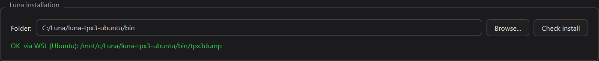

Installation
Before anything else, have Luna installed: your own licensed copy from
ASI, the Ubuntu build, containing bin/tpx3dump (Timepix3) or bin/tpx4dump
(Timepix4). None of the options below provides it.
Platform |
Setup |
Launch |
|---|---|---|
Ubuntu / Linux |
|
Activities menu, or |
Windows, way 1 |
install Python, WSL + Ubuntu, then |
|
Windows, way 2 |
install Python, WSL + Ubuntu, then |
double-click the Desktop shortcut |
Any, as a package |
|
|
Windows needs WSL for every way; see Windows for why.
Requirements
Python 3.9+
PySide6 >= 6.5 required
h5py, numpy optional -- Inspect tab, TDC columns
pandas optional -- the TDC frame preview
matplotlib optional -- the six plots
komorebi_mpl optional -- plot styles (falls back to the app palette)
pip install -r requirements.txt covers all of it; so does
pip install -e ".[analysis]", which also installs the app itself; see
From source.
Linux
Follow these in order. Steps 1 and 2 are what people usually skip, and skipping them gives you a launcher that installs cleanly and then does nothing when clicked.
1. System packages
sudo apt install python3 python3-venv libxcb-cursor0 desktop-file-utils
libxcb-cursor0: Qt 6.5+ will not open a window without it, and Qt’s own error message (“could not load the Qt platform plugin xcb”) does not name the package. On a bare install you may also needlibxkbcommon-x11-0andlibegl1.desktop-file-utils: providesdesktop-file-validate, which is how you check the menu entry in step 4. Not strictly required, but without it a malformed entry fails silently.
2. Install the launcher
From inside the GUI folder:
chmod +x run_gui.sh install-linux.sh
./install-linux.sh
With no flags that is the full install, which is what a fresh machine needs:
a private venv with everything in
requirements.txt(PySide6, h5py, numpy, pandas, matplotlib, komorebi_mpl), whichrun_gui.shthen finds on its own;the Activities-menu launcher;
a double-clickable icon on the Desktop.
Everything lands under $HOME; no root, nothing system-wide.
Flag |
Effect |
|---|---|
(none) |
venv + menu launcher + Desktop icon |
|
skip the venv (~450 MB, at |
|
skip the icon on the Desktop; the menu launcher is still installed |
|
remove the launcher, icon and desktop shortcut. Leaves the GUI’s own files and the venv alone. |
--with-venv and --desktop-icon from older instructions are still accepted;
both are now the default. A launcher from before the rename (Luna Tpx3 GUI)
is removed.
Re-running is safe; it overwrites the entry. If you move the folder, run it again so the launcher points at the new path.
3. Check it runs at all
Before worrying about the menu, prove the app itself starts:
./run_gui.sh
If a window opens, the launcher problem is purely a menu problem. If it does
not, you are missing PySide6 or libxcb-cursor0; run_gui.sh says which, in
a dialog if it can and on stderr regardless.
run_gui.sh picks its interpreter in this order: $PYTHON, a .venv beside
the script, the venv install-linux.sh built, then the system python3.
5. Point it at Luna
On Linux the Luna binary runs directly (backend native, nothing else to set
up). Make sure it is executable:
chmod +x /path/to/luna-tpx3-.../bin/tpx3dump # or .../bin/tpx4dump
Then continue with First run.
Windows
How it works, and why WSL
The Luna download is the Ubuntu build. Its binaries are Linux ELF executables:
bin/tpx3dump: ELF 64-bit LSB executable, x86-64,
interpreter /lib64/ld-linux-x86-64.so.2
Windows cannot run that. So the split is:
The GUI runs natively on Windows, as a normal Python/Qt app.
The converter runs inside WSL, launched as
wsl.exe -e /mnt/c/..., with Windows paths translated to/mnt/<drive>/...automatically.
You never open the Ubuntu shell yourself. The GUI drives it.
Without WSL the GUI still starts and everything except running works: build the queue, preview the commands, Export .sh to run on an Ubuntu box.
Step 1: Python
Install Python 3.9 or newer from python.org,
keeping the py launcher option ticked. That is all you install by hand:
.\install-windows.ps1 (way 2) builds a
private venv at %USERPROFILE%\venvs\luna-gui-wrapper with everything in
requirements.txt, and run_gui.bat (way 1) uses that same venv.
To use an interpreter of your own instead, install the dependencies into it:
py -3 -m pip install -r requirements.txt
py -3 -c "import PySide6, h5py, numpy, matplotlib; print('ok')"
Step 2: install WSL and Ubuntu
In PowerShell (no administrator rights needed with current WSL):
wsl --install -d Ubuntu
It downloads ~500 MB and then asks for a UNIX username and password. These are new credentials for the Linux system, unrelated to your Windows account. On older Windows builds WSL may ask for a reboot; current ones do not.
Ubuntu gives you the newest LTS. Luna for Timepix3 is built for Ubuntu
20.04, which Microsoft no longer offers, but that is fine: tpx3dump links
only against core glibc and libgcc
libgcc_s.so.1 libpthread.so.0 libm.so.6 libdl.so.2 libc.so.6
and glibc is forward-compatible, so a 20.04 build runs unchanged on 24.04.
No extra apt install is needed. If you would rather stay close to the
build target, wsl --install -d Ubuntu-22.04 also works.
Step 3: check the installation
Three checks, each answering a different question.
Is a distribution installed and running?
wsl --list --verbose
NAME STATE VERSION
* Ubuntu Running 2
Can WSL execute the Luna binary? Give it the /mnt/... form of your own
Luna path:
wsl -e /mnt/c/Users/<you>/path/to/luna-tpx3-.../bin/tpx3dump --version
Tpx3Dump 0.3.2
If that prints a version, the backend works. No chmod +x is needed: /mnt/c
is mounted with everything executable.
Can WSL see your data? For data on D::
wsl -e ls "/mnt/d/tpx3cam data"
WSL auto-mounts fixed disks only. A USB stick, card reader or other
removable drive never appears under /mnt, so the converter cannot open
anything stored on it: tpx3dump logs Skipping file ... as it does not have "Tpx3" extension and is not a directory and then panics with index out of bounds: the len is 0. The GUI checks for this before a run and offers to
mount the drive for you; the equivalent by hand, for E:, is
wsl -u root -e bash -c "mkdir -p /mnt/e && mount -t drvfs E: /mnt/e"
No password is needed, and the mount lasts until WSL next shuts down.
From inside the GUI: Advanced tab → Check install. It re-detects the
backend, then runs the converter’s --version and process --help and dumps
both into the log. No restart is needed after installing WSL.
A correct setup looks like this: the folder pointing at bin/, and a green
OK line naming the backend and the translated /mnt/c/... path:

If that line is amber or red it says why: no Luna folder set, no converter under it, or no WSL distribution installed.
Way 1: run it from PowerShell
cd "C:\path\to\Luna-GUI-Wrapper"
.\run_gui.bat
or, from anywhere, in one line:
& "C:\path\to\Luna-GUI-Wrapper\run_gui.bat"
The & is PowerShell’s call operator, needed whenever the command is a quoted
string. The .bat picks its interpreter in this order: %LUNA_PYTHON%, a
.venv beside it, the venv install-windows.ps1 builds
(%USERPROFILE%\venvs\luna-gui-wrapper, or luna-tpx3-gui from before the
rename), %USERPROFILE%\venvs\tpx4cam, then py -3. If you gave the installer
a different -VenvName, point LUNA_PYTHON at that venv’s python.exe.
It uses python.exe deliberately, so a startup error stays readable in the
console. Do not close that console while the GUI is running: it kills the GUI.
Way 2: double-click, no terminal
.\install-windows.ps1
That builds a private venv with everything in requirements.txt at
C:\Users\<you>\venvs\luna-gui-wrapper (~450 MB), then creates a Luna GUI
Wrapper shortcut on your Desktop. Double-click it and the app starts: no
PowerShell, no cd, no console window, and WSL still gets driven underneath
exactly as before. No administrator rights are needed.
Flag |
Effect |
|---|---|
(none) |
venv + Desktop shortcut |
|
also add it to the Start Menu, so it is searchable |
|
build the venv at |
|
skip the venv and use a Python that already has PySide6 (an earlier venv, |
|
use this specific |
|
remove the shortcuts. Leaves the GUI’s own files and the venv alone. |
What it does: builds the venv from whichever Python 3.9+ the py launcher
finds (re-running reuses it and brings its packages up to date), checks that
the interpreter can actually import PySide6 (this matters, since
pythonw.exe has no console and an import error would be silent), and writes
a .lnk pointing at the venv’s pythonw.exe. A shortcut from before the
rename (Luna Tpx3 GUI) is removed. Right-click the shortcut → Pin to
taskbar if you want it permanently to hand.
After updating the GUI (a new release, or git pull), re-run
.\install-windows.ps1 if requirements.txt changed; otherwise the shortcut
already runs the new code.
There is deliberately no standalone .exe; see the
licence note.
From source
A fresh virtual environment is recommended:
git clone https://github.com/rngKomorebi/Luna-GUI-Wrapper
cd Luna-GUI-Wrapper
python -m venv .venv
# Windows: .venv\Scripts\activate
# Linux: source .venv/bin/activate
pip install -e ".[analysis]"
Then any of these starts the GUI:
luna-gui-wrapper # console script installed by pip
python -m luna_gui_wrapper
python src/main.py # works without installing, given the dependencies
pip install -e . without the [analysis] extra installs PySide6 only:
enough to build and run batches, but the Inspect tab stays inert. run_gui.bat
and run_gui.sh pick up a .venv beside them automatically.